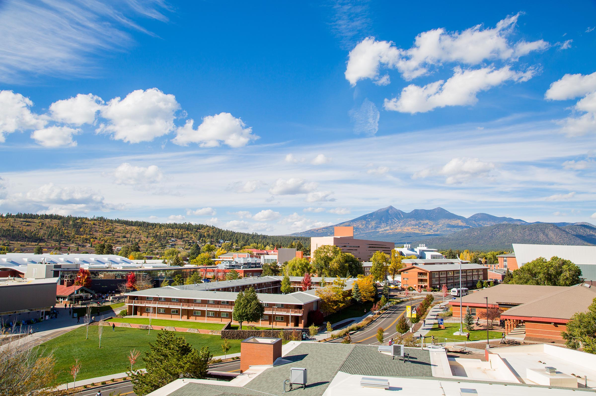

In almost every catergory, Flagstaff is more expensive than the average US city. Is it worth it though? YES! You have a variety of things to do and places to go.

Northern Arizona University is a relatively small university in Arizona. That is a big deal for some people, some people like larger schools and others don't They specialize in things such as: Business, Accounting, Biomedical Sciences, Nursing, Criminology and Criminal Justice. The average tuition fee for in-state is roughly $27,000. Out-of-state is roughly $40,000. Click here to go to their website and call and/or get more information.
Flagstaff gets all four seasons(unklike Phoenix). Flagstaff gets roughly 81 inches of snow per year. There hottest month is August at an average of high 79 degrees and that isn't even hot! Flagstaff's coldest month is January at an average high of 44 degrees. And a low of 16 degrees!